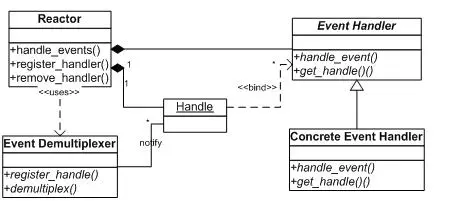
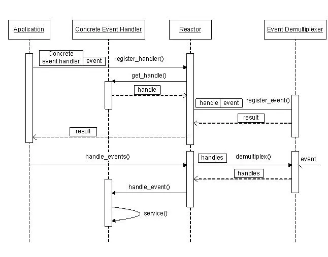

libevent源码深度剖析02
Reactor模式
前面讲到，整个libevent本身就是一个Reactor，因此本节将专门对Reactor模式进行必要的介绍，并列出libevnet中的几个重要组件和Reactor的对应关系，在后面的章节中可能还会提到本节介绍的基本概念。
1. Reactor的事件处理机制
首先来回想一下普通函数调用的机制：程序调用某函数?函数执行，程序等待?函数将结果和控制权返回给程序?程序继续处理。
Reactor释义“反应堆”，是一种事件驱动机制。和普通函数调用的不同之处在于：应用程序不是主动的调用某个API完成处理，而是恰恰相反，Reactor逆置了事件处理流程，应用程序需要提供相应的接口并注册到Reactor上，如果相应的时间发生，Reactor将主动调用应用程序注册的接口，这些接口又称为“回调函数”。使用libevent也是想libevent框架注册相应的事件和回调函数；当这些事件发生时，libevent会调用这些回调函数处理相应的事件（I/O读写、定时和信号）。
用“好莱坞原则”来形容Reactor再合适不过了：不要打电话给我们，我们会打电话通知你。
举个例子：你去应聘某xx公司，面试结束后。
“普通函数调用机制”公司HR比较懒，不会记你的联系方式，那怎么办呢，你只能面试完后自己打电话去问结果；有没有被录取啊，还是被据了；
“Reactor”公司HR就记下了你的联系方式，结果出来后会主动打电话通知你：有没有被录取啊，还是被据了；你不用自己打电话去问结果，事实上也不能，你没有HR的留联系方式。
2. Reactor模式的优点
Reactor模式是编写高性能网络服务器的必备技术之一，它具有如下的优点
1）响应快，不必为单个同步时间所阻塞，虽然Reactor本身依然是同步的；
2）编程相对简单，可以最大程度的避免复杂的多线程及同步问题，并且避免了多线程/进程的切换开销； 3）可扩展性，可以方便的通过增加Reactor实例个数来充分利用CPU资源； 4）可复用性，reactor框架本身与具体事件处理逻辑无关，具有很高的复用性；
3. Reactor模式框架
使用Reactor模型，必备的几个组件：事件源、Reactor框架、多路复用机制和事件处理程序，先来看看Reactor模型的整体框架，接下来再对每个组件做逐一说明。

1） 事件源 Linux上是文件描述符，Windows上就是Socket或者Handle了，这里统一称为“句柄集”；程序在指定的句柄上注册关心的事件，比如I/O事件。
2） event demultiplexer——事件多路分发机制 由操作系统提供的I/O多路复用机制，比如select和epoll。 程序首先将其关心的句柄（事件源）及其事件注册到event demultiplexer上； 当有事件到达时，event demultiplexer会发出通知“在已经注册的句柄集中，一个或多个句柄的事件已经就绪”； 程序收到通知后，就可以在非阻塞的情况下对事件进行处理了。 对应到libevent中，依然是select、poll、epoll等，但是libevent使用结构体eventop进行了封装，以统一的接口来支持这些I/O多路复用机制，达到了对外隐藏底层系统机制的目的。
3） Reactor——反应器 Reactor，是事件管理的接口，内部使用event demultiplexer注册、注销事件；并运行事件循环，当有事件进入“就绪”状态时，调用注册事件的回调函数处理事件。 对应到libevent中，就是event_base结构体。 一个典型的Reactor声明方式：
class Reactor{
public:
int register_handler(Event_Handler *pHandler, int event);
int remove_handler(Event_Handler *pHandler, int event);
void handle_events(timeval *ptv);
// ...
};
4） Event Handler——事件处理程序
事件处理程序提供了一组接口，每个接口对应了一种类型的事件，供Reactor在相应的事件发生时调用，执行相应的事件处理。通常它会绑定一个有效的句柄。 对应到libevent中，就是event结构体。 下面是两种典型的Event Handler类声明方式，二者互有优缺点。
class Event_Handler{
public:
virtual void handle_read() = 0;
virtual void handle_write() = 0;
virtual void handle_timeout() = 0;
virtual void handle_close() = 0;
virtual HANDLE get_handle() = 0;
// ...
};
class Event_Handler{
public:
// events maybe read/write/timeout/close .etc
virtual void handle_events(int events) = 0;
virtual HANDLE get_handle() = 0;
// ...
};
4. Reactor事件处理流程
前面说过Reactor将事件流“逆置”了，那么使用Reactor模式后，事件控制流是什么样子呢？ 可以参见下面的序列图。

5. 小结
上面讲到了Reactor的基本概念、框架和处理流程，对Reactor有个基本清晰的了解后，再来对比看libevent就会更容易理解了，接下来就正式进入到libevent的代码世界了，加油！
参考资料： Pattern-Oriented Software Architecture, Patterns for Concurrent and Networked Objects, Volume 2